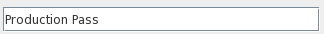

Several of the windows that make up the GUI (most notably the Experiment Editor and Job Control Window, but there are
others) are organized in a browser form, with a small number of
"top level" panels that can be opened or closed based on whether
you are interested in them or not (some of these panels also
contain their own, similar browser structures). To open or
close a panel, click on the "title" bar at the top of the
panel. If you open many panels you can often expand in size
beyond the window limits, in which case the scroll bar on the
right may be used to navigate up and down (the mouse wheel tries
to do the same thing, as well as dragging the screen up and down
with the mouse, although sometimes the panels trap these events
for other purposes - the scroll bar will always work). Arrows, as well as panel
appearance will let you know whether they are "open" or
"closed". Mixed in with the opening/closing panels are
"permanent" panels that cannot be closed. Permanent panels
do not have an obvious title bar and have no arrow icon. The
example below (part of the Experiment Editor) shows open, closed,
and permanent panels. The open panel "Sources" contains a
series of closed panels. The bottom-most panel is
"permanent".
Many of the settings in the Experiment Editor are "remembered" if you run it a subsequent time (and even between sessions of running the GUI). This is done to ease repetitive tasks, making the assumption that any time you run the Experiment Editor, a very good guess for the way you wish to run it is somewhat similar to the way you last ran it. For the most part this should save you time, however it bears watching here and there. If you change a setting that you never touch and don't even fully understand the consequences of just for fun, it may very well stay changed until you actively undo it.
Nothing happens to the DiFX host, the database, or your experiments until you hit the "Apply" button, so don't worry about playing with the controls (bearing in mind the caveat in the previous paragraph). You can always "Cancel" and start again if you get in a position you can't figure out how to back out of.The DiFX GUI has a number of "Text Field" widgets that allow the user to enter text (file paths, string settings, etc.). Except in a few cases, the settings you enter do not take effect until you hit the "enter" key. To indicate that a setting has been "changed" but not "committed" by hitting the enter key, the text fields will turn yellow once the text inside them is changed in any way. Hitting enter will both cause their content to be used and the yellow color to disappear.

Unchanged Text Field
In locations where text fields are specifying paths on the DiFX
host, tab completion is implemented. Hitting the "tab" key
will cause a remote "ls" operation on the DiFX host, the results
of which will be used to extend the text field content as much as
possible. This should act exactly like familiar tab
completion except there may be a perceptible delay involved if the
connection to the DiFX host through guiServer is
slow. Tab completion does not work if you are not connected
to the DiFX host through guiServer.
Number boxes are Text Field widgets that are restricted to
numbers. Their values can be changed either by typing (only
numeric values are accepted), or by spinning the mouse over
them. They can contain floating point or integer-only values
- single clicks will increment/decrement one of the digits (chosen
by the developer - hopefully appropriately).
Tooltips are pop-up informational windows that appear when
hovering over GUI widgets. Standard Java tooltips are
restricted to single lines of text that have no formatting
capacity, limiting the information that they can convey. The
DiFX GUI has its own "Complex" tooltips that include multiple
lines of text, different fonts, colors, and links to GUI
documentation (they also have a better default background
color). While it could be argued that they occasionally try
to do too much, we feel they are more useful.


All Java-style tooltips throughout the GUI are gradually being
replaced with Complex Tooltips. This is an on-going process.